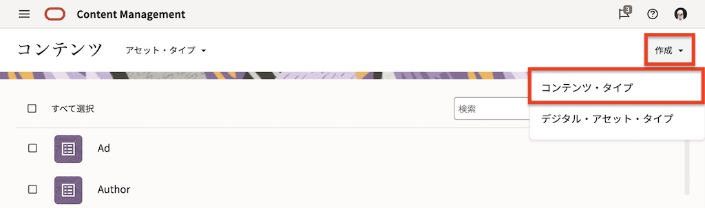
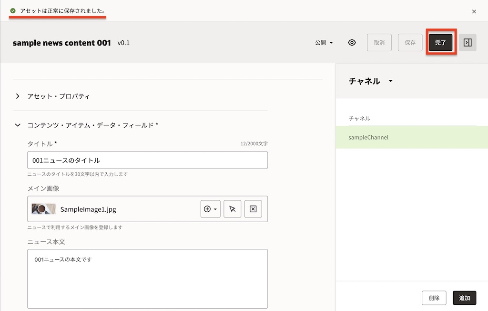

Oracle Content ManagementをHeadless CMSとして使ってみよう【初級編】
この文書はOracle Content Management(OCM)のアセット管理機能をHeadless CMSとして利用する基本的な方法をステップ・バイ・ステップで紹介するチュートリアルです。
【お知らせ】この文書は、2023年7月時点での最新バージョン(23.7.2)を元に作成されてます。 チュートリアル内の画面ショットについてはOracle Content Managementの現在のコンソール画面と異なっている場合があります。
前提条件
-
OCMインスタンスが作成済であること(以下の作成手順参照)
-
少なくとも下記4つのOCMインスタンスのアプリケーション・ロールが付与された管理ユーザーを用意すること
- CECContentAdministrator
- CECDeveloperUser
- CECEnterpriseUser
- CECRepositoryAdminisrrator
[Memo]
ユーザーの作成とアプリケーションロールの付与手順は、OCI IAM Identity Domain環境でOracle Content Managementインスタンスの利用ユーザーを作成するもしくはOracle Content Managementインスタンスの利用ユーザーを作成するをご確認ください。
OCMのアセット管理機能を利用するための準備作業を行います。アセット・リポジトリ、公開チャネル、コンテンツ・タイプをそれぞれ作成し、関連付けを行います。

リポジトリとは 「デジタル・アセット（画像、動画など）やコンテンツ・アイテム（ニュースやブログなどの構造化コンテンツ）を保管・管理する論理的な器」 です。リポジトリには「アセット・リポジトリ」と「ビジネス・リポジトリ」の2種類が存在し、目的や用途に応じて使い分けることができます。それぞれの特徴や利用できる機能の差異などは、以下ドキュメントをご確認ください
また、ビジネス・リポジトリの利用方法については、OCMチュートリアル内のOracle Content Managementで請求書などの電子ファイルを長期保管してみよう【初級編】で紹介してます。あわせてご確認下さい。
このチュートリアルでは、アセット・リポジトリ（以降リポジトリ） を作成します。
-
OCMインスタンスのアクセスします。OCMインスタンスの URL は以下の通りです。
https://<OCMInstance>-<Tenancy>.cec.ocp.oraclecloud.com/documents/home- <OCMInstance>: OCMインスタンス名
- <Tenancy>: クラウドアカウント名（テナンシー名）
-
OCMのホーム画面が表示されます。左ナビゲーションのADMINISTRATIONの 「コンテンツ」 をクリックします

-
コンテンツの右隣のメニューで「リポジトリ」が選択されていることを確認し、「作成」→「アセット・リポジトリ」 をクリックします

-
プロパティの「名前」に Sample Content Repository を入力します。その他の項目は未選択のまま、画面を下にスクロールします

-
言語の「デフォルト言語」で 日本語(ja) を選択します

-
スマート・コンテンツは 「有効」 を選択します（スイッチONの状態）。右上の 「保存」 をクリックします
[Memo]
リポジトリ作成時に「スマート・コンテンツ」を有効（スイッチON）にすると、AIによる画像認識技術を活用した画像の自動タグ付け機能 が動作します。これら自動的に付加されたタグは、スマート・コンテンツ・タグ（スマート・タグ） として表示され、画像検索などに利用できます。なお、付加されたスマート・コンテンツ・タグの追加・変更・削除はできません -
以上でリポジトリの作成は完了です

コンテンツ・タイプを作成します。
コンテンツ・タイプは 「コンテンツ・アイテムに含まれる構造を定義するフレームワーク」 です。具体的には、テキスト、大きいテキスト、メディア、日付などのデータフィールドを組み合わせになります。コンテンツ・タイプで定義した構造を利用して、コンテンツ・アイテムを作成します
ここでは、下記の3つのデータ・フィールドを持つ sampleNewsType というコンテンツ・タイプを作成します。
| フィールドの名前 | 表示名 | データフィールド | 単一/複数 | 必須 |
|---|---|---|---|---|
| title | タイトル | テキスト | 単一 | Yes |
| image | メイン画像 | メディア | 単一 | ー |
| body | ニュース本文 | 大きいテキスト | 単一 | ー |
-
コンテンツの右横の「リポジトリ▼」をクリックし、プルダウンメニューから 「アセット・タイプ」 を選択します

-
「アセット・タイプ」が選択されていることを確認し、「作成」→「コンテンツ・タイプ」 をクリックします 
-
「名前」に sampleNewsType と入力し、「作成」 をクリックします

-
はじめに、
title(タイトル)フィルードを作成します。-
「データ・フィールド」の 「テキスト」 を、「ここにデータ・フィールドをドロップして定義を追加」にドラッグ&ドロップします

-
「テキスト設定」ダイアログが表示されます。以下の通りに入力し、「次」 をクリックします
- このフィールドの表示名の指定: タイトル
- このデータ・フィールドの説明を指定して…: ニュースのタイトルを30文字以内で入力します
- このフィールドの名前の指定: title
- データ・フィールドの指定: 単一の値
- このフィールドにはコンテンツが必要です: チェックを入れる

-
「②外観」を設定します。以下の通りに設定し、最後に 「OK」 をクリックします
- データ・フィールドの外観: 「単一テキスト・ボックス」
- 長さの検証: チェックを入れる
- 最小: 0
- 最大: 30

-
-
title(タイトル)フィールドが作成されました。

-
同じ手順を繰り返し、
image(メイン画像)を作成します。-
データ・フィールドの 「メディア」 を、先ほど作成した「タイトル」の下にドラッグ&ドロップします

-
「メディア設定」を入力し、「次」 をクリックします
- このフィールドの表示名の指定: メイン画像
- このデータ・フィールドの説明を指定して…: ニュースで利用するメイン画像を登録します
- このフィールドの名前の指定: image
- データ・フィールドの指定: 単一の値
- このフィールドにはコンテンツが必要です: チェックを外す
- 依存関係を公開中: 必須

-
「②外観」を設定し、「OK」 をクリックします
- データ・フィールドの外観: メディア・ピッカー
- メディアの選択: イメージのみチェックを入れる
- すべてのデジタル・アセット・タイプ: チェックを外す
- デジタル・アセット・タイプの選択: Imageのみを選択

-
-
image(メイン画像)フィールドが作成されました。最後に
body(ニュース本文)フィールドを作成します。-
データ・フィールドの 「大きいテキスト」 を「メイン画像」の下にドラッグ&ドロップします

-
「大きいテキスト設定」を入力し、「次」 をクリックします
- このフィールドの表示名の指定： ニュース本文
- このデータ・フィールドの説明を指定して…： ニュースの本文を入力します
- このフィールドの名前の指定： body
- データ・フィールドの指定： 単一の値
- このフィールドにはコンテンツが必要です： チェックを外す

-
「②外観」を設定し、「OK」 をクリックします
- データ・フィールドの外観： リッチテキスト・エディタ
- リッチテキスト・エディタのツールバー・タイプを選択します： 標準

-
-
以上で sampleNewsType の作成が完了しました。右上の 「保存」 をクリックします

-
「アセット・タイプは正常に保存されました」が表示されることを確認し、右上の 「×」 をクリックします

-
以上で、コンテンツ・タイプの作成は完了です
公開チャネルを作成します。
公開チャネルとは 「リポジトリで管理するアセットの公開先」 です。アセット公開時の各種ポリシーを制御します。
なお、公開チャネルはアセット・リポジトリのみで利用します（ビジネス・リポジトリでは利用できません）
- 公開中
- 承認済みアイテムのみ公開できます（アセットの公開に承認が必要）
- すべてを公開できます（アセットの公開に承認は不要）
- ローカリゼーション
- 作成済のローカリゼーションポリシーを選択
- なし
- 検索結果ランキング
- ランキング・ポリシーを選択（デフォルトは「グローバル・デフォルト」
- ランキング・ポリシーのデフォルト（ランキング・ポリシーが適用されるアセット・タイプを選択。未選択の場合は、全てのアセット・タイプに適用）
- 公開されたリソースへのアクセス
- パブリック（認証不要）
- セキュア（認証必須）
-
「コンテンツ」の右隣の 「アセット・タイプ▼」 をクリックし、「チャネルのパブリッシュ」 を選択します
-
「チャネルのパブリッシュ」が選択されていることを確認し、「作成」 をクリックします

-
「プロパティ」の「名前」に sampleChannel を入力します

-
続けて以下の通りに選択し、最後に 「保存」 をクリックします
- 公開チャネルのポリシー
- 公開中: すべてを公開できます
- ローカリゼーション: 未選択のまま（もしくは「なし」を選択）
- 検索結果ランキング
- ランキング・ポリシー: グローバル・デフォルトのまま（デフォルトのまま）
- ランキング・ポリシーのスコープ: 未選択のまま
- 公開されたリソースへのアクセス: パブリック
[Memo]
ここで設定した公開チャネルのポリシーは、以下の通りとなります- 「公開済アセットは認証なしに外部からアクセス可」
- 「アセットの公開は承認不要」
- 「アセット公開時にローカライズ言語の作成不要」
- 「ランキング・ポリシーはグローバル・デフォルトを利用」
- 公開チャネルのポリシー
-
sampleChannel が正しく作成されたことを確認します

前の手順で作成したコンテンツ・タイプ(sampleNewsType)と公開チャネル(sampleChannel)を、リポジトリ(Sample Content Repository)で利用できるように、リポジトリの設定を変更します。
-
「コンテンツ」の右隣のプルダウンメニューで 「リポジトリ」 を選択します
-
Sample Content Repositoryのチェックボックスにチェックをいれ、「編集」 をクリックします

-
「アセット・タイプ」でsampleNewsTypeとImageを選択します
[TIPS]
OCM21.1.1より、アセット・リポジトリで画像を利用する場合は、事前定義済のアセット・タイプのImageを利用できます。もしくは、自分で定義したカスタムのデジタル・アセット・タイプを指定します -
「チャネルのパブリッシュ」でsampleChannelを選択し、「保存」 をクリックします

-
-
以上で、リポジトリの設定は完了です
前の手順で、OCMのアセット管理機能を利用する準備ができました。ここからは、作成したリポジトリにアセットを登録し、公開チャネル(sampleChannel)を介して登録アセットを公開します。
リポジトリに画像ファイルをアップロードします。OCMのアセット管理では、画像や動画、PDF文書などのファイル形式のコンテンツ（非構造化データ）は、デジタル・アセット と言います
-
左ナビゲーションより 「アセット」 をクリックします
-
フィルタパネルより、「Sample Content Repository」 を選択します

-
右上の 「追加」→「このコンピュータから追加」 をクリックします

-
ローカルPCから任意の画像ファイルを選択します。（ここでは、下記のコーヒーカップの画像を利用）

-
「リポジトリに追加」ダイアログが表示されます。先ほど選択した画像ファイルを選択します
[Memo]
アセット・タイプで Image が自動選択されます。画像として登録可能なデジタル・アセット・タイプが複数存在する場合、この画面上で選択することができます -
右パネルで 「チャネル▼」 が選択されていることを確認し、「追加」 をクリックします

-
sampleChannel を選択し、「追加」 をクリックします

-
「チャネル」に sampleChannel が選択されていることを確認し、「完了」 をクリックします

-
リポジトリに、登録した画像ファイル（デジタル・アセット）が登録されます

-
デジタル・アセットを選択し、右クリック→ 「タグとコレクション」 をクリックします

-
右パネルの「スマート・コンテント・タグ」にデジタル・アセットに関するタグ（ここでは
コーヒーやカップなど）が自動付加されていることを確認します
[Memo]
リポジトリ作成時に「スマート・コンテンツ」を有効（スイッチON）にすると、AIによる画像認識技術を活用した画像の自動タグ付け機能 が動作します。これら自動的に付加されたタグは、スマート・コンテンツ・タグ（スマート・タグ） として表示され、画像検索などに利用できます。なお、付加されたスマート・タグの追加・変更・削除はできません
コンテンツ・アイテムを作成します。作成時に、先ほど登録したデジタル・アセット（画像ファイル）を利用します
-
Sample Content Repository を開き、右上の 「作成」→「新規コンテンツ・アイテムを作成します」 をクリックします

-
「コンテンツ・アイテムの作成」ダイアログが表示されます。コンテンツ・タイプで 「SampleNewsType」 を選択し、「OK」 をクリックします

-
「アセット・プロパティ」に、下記の通りに入力します
- 名前: sample news content 001
- 説明: （任意）
- 言語: 日本語 (ja)
- 翻訳不可: チェックしない
-
右パネルで「チャネル」を選択し、sampleChannel を追加します
-
「コンテンツ・アイテム・データ・フィールド」に入力します。ここでは、下記の通りに入力し、「保存」 をクリックします
- タイトル: 001ニュースのタイトル
- メイン画像: 先ほど登録したデジタルアセット（ここではコーヒーカップの画像）を選択
- ニュース本文: 001ニュースの本文です

-
-
「アセットは正常に保存されました」を確認し、完了をクリックします 
-
以上で、コンテンツ・アイテムの作成は終了です
アセット登録時、ステータスは ドラフト に設定されます。ドラフト状態では外部からの利用はできません。ここでは、アセットの公開操作を実施し、アセットのステータスを「公開」にします。
アセットの公開には 「今すぐ公開」 と 「スケジュール公開」 の2種類が存在します。「今すく公開」は手動操作による即時公開です。「スケジュール公開」はユーザーによりアセットの公開日時をあらかじめ予約する予約公開です。それぞれの特徴については、以下ドキュメントをご確認下さい
また、アセット公開時、OCMは他のアセットとの依存関係を自動的に検証し、問題なければ公開が可能となります。ここでは、コンテンツ・アイテム(sample news content 001)を 「今すく公開」 し、あわせてメイン画像として選択したデジタル・アセットの依存関係も自動的に検証され、さらに公開されることを確認します
-
フィルタパネルで 「Sample Content Repository」 が選択されていることを確認します
-
コンテンツ・アイテム sample news content 001 を右クリックし、「今すぐ公開」 をクリックします

-
「公開」 をクリックします

[TIPS]
アセット公開を実行すると、自動的に公開前の事前検証が実施され、問題がなければアセットはそのまま公開されます。アセット公開前に事前検証を実施し、その結果を確認したい場合は、「事前検証」 をクリックして詳細を表示することができます -
「アセットが公開されました」を確認し、2つのアセットのステータスが「公開済」であることを確認します

[TIPS]
アセットステータスとアイコンは、こちらのドキュメントをご確認ください
RESTクライアント（ここではWebブラウザ）から公開済アセットにアクセスし、アセットの情報が取得できることを確認します
公開済のコンテンツ・アイテム sample news content 001 に、OCMにサインしていない別ブラウザ からアクセスし、正しく情報を取得できるか？を確認します。
公開済のREST API のエンドポイントは、アセットの プロパティ→API の 配信URL より確認できます
-
コンテンツ・アイテム sample news content 001 を選択し、右クリック→ 「プロパティ」 をクリックします

-
「API」 タブをクリックします
-
配信URLの sampleChannel の 「URLをクリップボードにコピー」 をクリックします

-
OCMインスタンスにサインインしていない別ブラウザ（ここではFireFox のプライベートウィンドウ）を起動し、クリップボードにコピーしたURLを貼り付け、実行します。
[Memo]
貼り付けたURLは以下の形式ですhttps://<OCMInstance>-<Tenancy>.ocecdn.oraclecloud.com/content/published/api/v1.1/items/<Asset id>?channelToken=<Channel token><OCMInstance>: OCMインスタンス名
<Tenancy>: クラウド・アカウント名（テナンシー名）
<Asset id>: アセットID。アセットを一意に識別するID。公開済アセット > プロパティ > API より確認可
<Channel token>: チャネル・トークン。アセットが公開されている公開チャネルを一意に識別するID。ADMINISTRATION:コンテンツ > チャネルのパブリッシュより確認可 -
応答を確認します。sample news content 001で入力した内容(title, image, body)がそれぞれ取得されていることを確認します

[Memo]
公開済アセットの情報を取得するREST APIは、下記ドキュメントより確認できます
以上でこのチュートリアルは終了です。